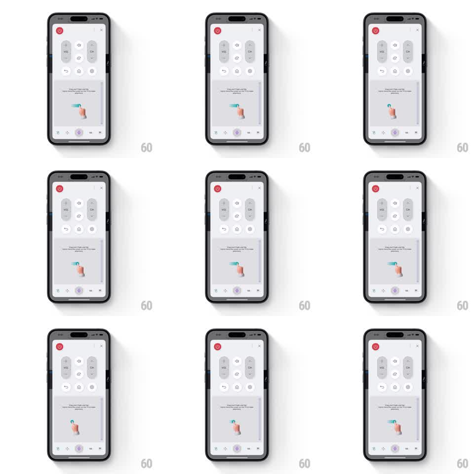

Media
Frame-by-frame

Rebuild this animation 1:1: LG ThinQ's remote drag coachmark - a 3D hand with an extended index finger drags downward along a glowing teal trail inside the coachmark card, looping the gesture demo over the dimmed remote UI.

Rebuild this animation 1:1: LG ThinQ's remote drag coachmark - a 3D hand with an extended index finger drags downward along a glowing teal trail inside the coachmark card, looping the gesture demo over the dimmed remote UI. ## Integration Integration: stack-agnostic spec - springs given as stiffness/damping, timed motions as duration + curve; map every value to your framework and animation library of choice. ## Scene TV remote screen: power button, VOL and CH rocker columns, navigation and settings icons, bottom tab bar with the joystick tab active. The coachmark card occupies the middle: explainer text at top, and a demo area where a 3D hand drags down a touch surface, a teal trail line following the fingertip. ## Motion spec Pattern: looping drag-gesture demo with a trailing guide. - The hand enters from the top of the demo area (translateY -20pt + fade, 300ms) and settles on the surface (scale 1.05 -> 1, 150ms - a soft "touch down"). - Drag: the hand moves down ~120pt over 900ms (ease-in-out), the teal trail drawing behind the fingertip at the same progress (stroke-dash style reveal), ending with a small ripple ring at the stop point (scale 0 -> 1.4, fade, 400ms). - Hold 300ms, then the trail fades (300ms) and the hand floats back to the start (600ms, ease-in-out) - loop with an 800ms pause. - A small down-arrow glyph rides above the fingertip, bobbing gently (translateY +-3pt, 1s). - The remote UI behind the card stays dimmed and static. ## Calibration - The fingertip and the trail head must be the same point at every frame - no lag between hand and line. - The loop reads as a demo, not an error: keep the pause long enough to register "again". ## Reduced motion Static hand at mid-drag with the full trail drawn; no loop. ## Don't miss - The hand is a soft 3D render with a sleeve accent, not a flat icon. - Trail glow (teal, ~4pt with blur) against the muted card is the attention hook.